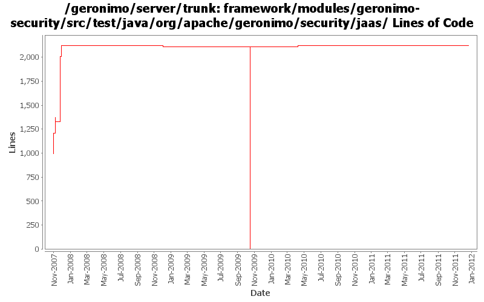

[root]/framework/modules/geronimo-security/src/test/java/org/apache/geronimo/security/jaas

| Author | Changes | Lines of Code | Lines per Change |
|---|---|---|---|
| Totals | 100 (100.0%) | 3415 (100.0%) | 34.1 |
| djencks | 70 (70.0%) | 2337 (68.4%) | 33.3 |
| vamsic007 | 23 (23.0%) | 1065 (31.2%) | 46.3 |
| xuhaihong | 2 (2.0%) | 8 (0.2%) | 4.0 |
| gawor | 5 (5.0%) | 5 (0.1%) | 1.0 |
GERONIMO-6240 Make several base geronimo functions (kernel, deployer, etc) DS services and make the car-maven-plugin take advantage of that. Server assembly doesn't work yet, builds framework.
1 lines of code changed in 1 file:
GERONIMO-5702: Update for Karaf 2.1.2. Based on patch from Viola Lu
4 lines of code changed in 4 files:
Fix the failed unit cases after using Karaf proxy LoginModule
8 lines of code changed in 2 files:
GERONIMO-5249 use Karaf's proxy login module to load login modules from correct bundles
9 lines of code changed in 2 files:
GERONIMO-4916 step 2 move sandbox osgi framework into trunk
2111 lines of code changed in 16 files:
GERONIMO-4916 step 1 remove old framwork
0 lines of code changed in 19 files:
GERONIMO-4553 Make web use of security realms depend on plugin visibility; make console expose the 'global' attribute for configuration (renamed from 'publish'). Also merges in geronimo-security changes from sandbox branches.
6 lines of code changed in 4 files:
GERONIMO-4445, GERONIMO-4415 Fix up GeronimoLoginConfiguration and SimpleCredentialStore, use in monitoring console agent
26 lines of code changed in 19 files:
GERONIMO-3654 Moving o.a.g.s.jaas.NamedUPCredentailLoginModule to o.a.g.s.realm.providers
o Copied o.a.g.s.jaas.NamedUPCredentailLoginModule to o.a.g.s.realm.providers.NamedUsernamePasswordCredentialLoginModule
o Marked NamedUPCredentialLoginModule as deprecated
o Changed all references from o.a.g.s.jaas.NamedUPCredentialLoginModule to o.a.g.s.realm.providers.NamedUsernamePasswordCredentialLoginModule
5 lines of code changed in 1 file:
another test fix for harmony
1 lines of code changed in 1 file:
GERONIMO-3640 Eliminate UPCredentialLoginModule
o Marked UPCredentialLoginModule as deprecated.
o Replaced the only reference to UPCredentialLoginModule in ConfigurationEntryTest with GeronimoPasswordCredentialLoginModule.
0 lines of code changed in 2 files:
GERONIMO-3650 Review ConfiguredIdentityNamedUsernamePasswordLoginModule
o logout() should destroy credentials when the subject is read-only.
o Changes to bring ConfiguredIdentityNamedUsernamePasswordLoginModule in line with http://java.sun.com/j2se/1.5.0/docs/guide/security/jaas/JAASLMDevGuide.html
112 lines of code changed in 1 file:
GERONIMO-3629 Review GeronimoPropertiesFileMappedPasswordCredentialLoginModule
o logout() should remove credentials from the subject.
o logout() should destroy credentials when the subject is read-only.
o Changes to bring GeronimoPropertiesFileMappedPasswordCredentialLoginModule in line with http://java.sun.com/j2se/1.5.0/docs/guide/security/jaas/JAASLMDevGuide.html
**: This commit can use a thorough review.
109 lines of code changed in 1 file:
GERONIMO-3628 Review GeronimoPasswordCredentialLoginModule
o logout() should remove credentials from the subject.
o logout() should destroy credentials when the subject is read-only.
o Changes to bring GeronimoPasswordCredentialLoginModule in line with http://java.sun.com/j2se/1.5.0/docs/guide/security/jaas/JAASLMDevGuide.html
**: This commit can use a thorough review.
129 lines of code changed in 1 file:
GERONIMO-3582 Review CertificateChainLoginModule
o Added a test
136 lines of code changed in 1 file:
GERONIMO-3626 Review NamedUPCredentialLoginModule
o Little cleanup
17 lines of code changed in 1 file:
GERONIMO-3627 LoginModule.logout() method should handle read-only subjects properly
o Added a test testLogoutWithReadOnlySubject()
70 lines of code changed in 5 files:
GERONIMO-3625 Review WrappingLoginModule
o Moving principal wrapping tests to a different testcase.
142 lines of code changed in 4 files:
GERONIMO-3626 Review NamedUPCredentialLoginModule
o logout() should remove credentials from the subject. Added a test for the same.
o logout() should destroy credentials when the subject is read-only.
o Changes to bring NamedUPCredentialLoginModule in line with http://java.sun.com/j2se/1.5.0/docs/guide/security/jaas/JAASLMDevGuide.html
127 lines of code changed in 1 file:
GERONIMO-3570 GERONIMO-3571 GERONIMO-3575 Check that logout removes all principals added in login. Fix the wrapping login module to do this also.
4 lines of code changed in 3 files:
GERONIMO-3570 GERONIMO-3571 GERONIMO-3575 Provide an AbstractLoginModuleTest to uniformize test setup and make it easier to determine if all relevant tests have been supplied.
180 lines of code changed in 6 files:
**GERONIMO-3575 Review CertificatePropertiesFileLoginModule
o LoginModule should not add principals when login fails. Added a test to detect if it does.
o Other changes to bring CertificatePropertiesFileLoginModule in line with http://java.sun.com/j2se/1.5.0/docs/guide/security/jaas/JAASLMDevGuide.html
**: This fix can use a thorough review.
0 lines of code changed in 1 file:
GERONIMO-3575 Review CertificatePropertiesFileLoginModule
o Added tests to check normal login and bad logins
166 lines of code changed in 1 file:
**GERONIMO-3571 Review PropertiesFileLoginModule
o LoginModule should not add principals when login fails. Added a test to detect the same.
o Other changes to bring PropertiesFileLoginModule in line with http://java.sun.com/j2se/1.5.0/docs/guide/security/jaas/JAASLMDevGuide.html
**: This fix can use a thorough review.
0 lines of code changed in 1 file:
**GERONIMO-3570 Review SQLLoginModule
o LoginModule should not add principals when login fails. Added a test to detect the same.
o Other changes to bring SQLLoginModule in line with http://java.sun.com/j2se/1.5.0/docs/guide/security/jaas/JAASLMDevGuide.html
**: This fix can use a thorough review.
52 lines of code changed in 2 files: